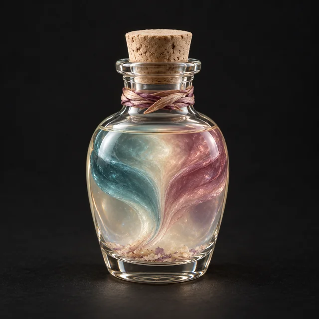

Расходник · Wondrous Loot · №68
Выпив это зелье при взгляде на существо, вы можете применять к нему заклинание «Чтение мыслей» неограниченное количество раз на время сцены, используя Инстинкт как Характеристику Заклинателя, если у вас её нет.
Получается из: Лепесток Эхо-Орхидеи
Открыть в генераторе лута